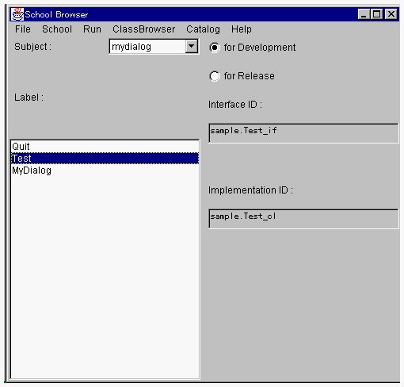
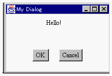

OZ IDE を利用したコンパイルとテスト実行
ここでは、OZ IDE を利用して、このクラスのコンパイルを行います。
Contents
- OZ IDEによるコンパイル
- OZ IDEによるテスト実行

１．OZ IDEによるコンパイル
コンパイルはプロジェクトマネージャを使用します。まず、サブジェクトの生成と暮らす登録を確認してください。（「OZ
IDE の起動とプロジェクト、サブジェクトの作成」で行いました。）
Subject:メニューリストをmydialogに合わせてください。3つのクラスがエントリされており、クラス識別子が付与されているでしょうか。

- その確認ができたら、いよいよコンパイルです。プロジェクト名がプロジェクトマネージャのタイトルに表示されますが、「OZ
IDE の起動とプロジェクト、サブジェクトの作成」で作成したプロジェクト（MyProj）を選択してください。Project
files: リストに、 Test.oz、Quit.oz、MyDialog.ozがリストされています。
cell型のクラスを宣言しているソースファイルTest.oz をクリックしてください。Test,ozの文字が反転し、そのファイルが選択されたことを示します。
そして、Compile メニューの compile を選択してください。コンパイルが開始され、コンパイルメッセージを表示するウィンドウが表示されます。
- このメッセージの後半をみると、MyDialog、Test、Quitという文字列が表示されています。上記の操作で、このプロジェクトに属するすべてのファイルがコンパイルされます。（このウィンドウを消去する場合には、OKボタンをクリックしてください。）
２．OZ IDEによるテスト実行
いまコンパイルしたアプリケーションをテスト実行してみましょう。アプリケーションの実行は、スクールブラウザから行います。
スクールブラウザのRunメニューの run を選択してください。
- コマンドプロンプトが開き、mydialogサブジェクトのアプリケーション、すなわち、Helloウィンドウを表示するアプリケーションがテスト実行されます。実行結果表示されるのは、次のウィンドウです。

- アプリケーションの構成
- OZ IDE の起動とプロジェクト、サブジェクトの作成
- Testクラス
- MyDialogクラス
- Quitクラス
- OZ IDE を利用したコンパイルとテスト実行

- アプリケーションのスクールファイル
- ランチャを利用するグローバルオブジェクトの生成とその活性化
- OZプログラムのデバック
- リリースパッケージの配布
(c) 1996-1998 IPA, ETL, AT21, FSIABC, FXIS,
InArc, MRI, NUL, SBC, Sharp, TEC, TIS. All rights reserved.